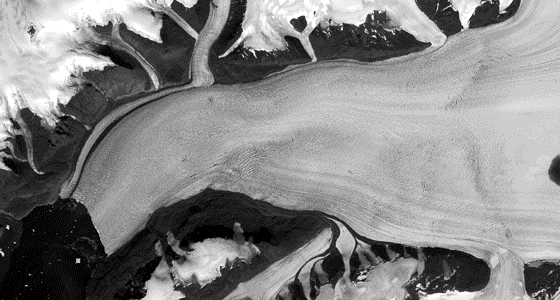
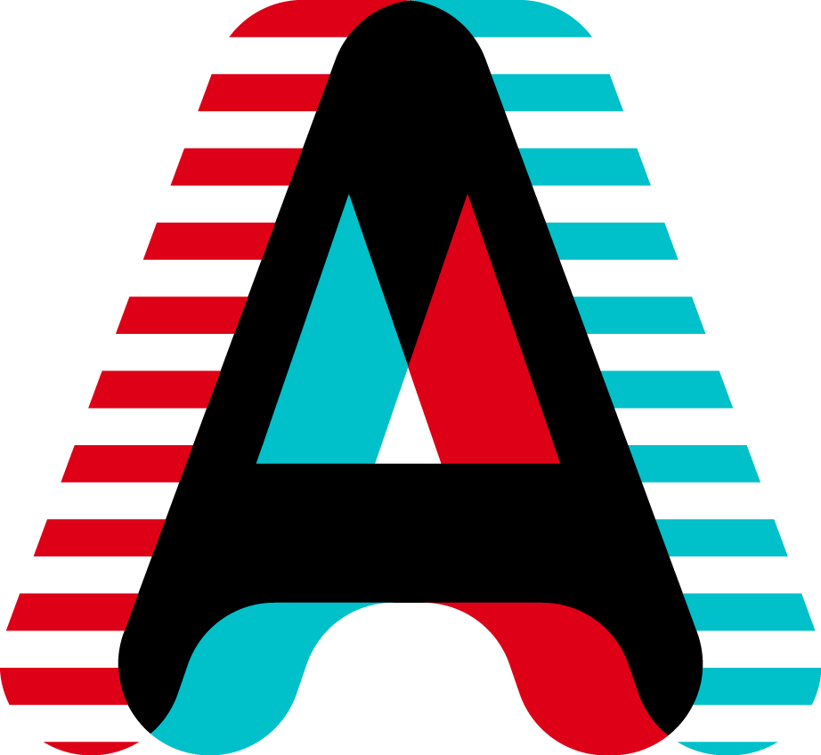

To identify the processes controlling glacer motion and improve models of future changes in sea level it is critical to record and characterize the motion of major ice sheet outlet glaciers. Motion must be captured at timescales from minutes to months in order to understand a range of dynamic processes such as stick-slip motion, iceberg calving, diurnal speed variability, and interactions between glaciers and floating sea ice. Terrestrial LiDAR scanners can image 3-dimensional surfaces at high temporal resolutions, providing new insights into physical processes occurring in regions of rapid glacier change. However, processing LiDAR data to compute spatially and time-variant glacier motion is not trivial. By improving methods for displacement mapping from multi-temporal LiDAR scans, it will be possible to provide a record of glacier motion on timescales and with spatial coverage that fills a missing gap in the current set of observation methods.
As part of my Masters work, I have been developing software and processing workflows to quantify motion and deformation from repeat LiDAR surveys at Helheim Glacier, Southeast Greenland. Helheim Glacier is one of the fastest glaciers in Greenland, moving at rates of around 20 meters per day in the summertime. Even over a short time of 30 minutes between scans the center of the glacier can move in excess of 50 cm. Near the edges, however, the glacier might move on the order of millimeters. There are some problems with computing velocity automatically and without user intervention, making this work first in its kind within the Earth Sciences. The very deformation (strain and strain-rate) that is sought can also be a source of uncertainty when registering two scans. At the simplest current level, we make the assumption that over small areas the morphological changes will be small enough that the full motion can be estimated by a 3-D rigid-body transformation (6 DoF). Simply subsetting the cloud into a grid of square chips and then performing registration with the iterative closest point (ICP) algorithm produces fairly desirable results. We take it a step further by using inherent attributes of the point clouds such as point-density to intelligently segment a cloud rather than using arbitrary segmentation schemes such as square chips.
The software I am writing uses Point Cloud Library and C++ for most of the underlying point manipulation. Visualization, plotting, and further analysis is performed with Python. This work is part of a joint effort between researchers at the University of Kansas, University of Maine, and the US Army Corps of Engineers Cold Regions Research and Engineering Laboratory (CRREL) to establish year-round autonomous monitoring of glaciers. Instrumentation is supported by RIEGL USA. You can find more about this project at lidar.io.
Subglacial hydrology is known to govern the dynamic motion of ice sheets and glaciers, but its effects are highly non-linear, counterintuitive, and otherwise poorly understood due to lack of available methods for monitoring such an environment.
In situ monitoring of subglacial hydrology has been successful in the past, but can be limited to areas where hydrologic variability is manifest as pressure changes.
At the ice-ocean interface, for instance, the proximal effect of the ocean shouldn't permit substantial changes in pressure.
Freshwater discharge affects the temperature-salinity stratification and circulation patterns within fjords, which can feedback into the dynamics of terminus melting and undercutting.
As part of NASA-funded field research in West Greenland, we collaborated with researchers at the Institute for Geophysics at the University of Texas at Austin, University of Oregon, and Oregon State University to install a temporary thermal infrared (7.5 um to 13 um) camera near the terminus of a tidewater outlet glacier.
The goal was to image subglacial discharge of cold freshwater into the salty and relatively warm fjord waters and visualize the impact, if any, of spatial and temporal discharge variability in influencing fjord circulation.
We captured an image every 15 minutes to produce a 10-day timeseries from a vantage point on the fjord wall about 1.5 km above sea level and 2 km laterally from the glacier terminus.
During the acquisition period the scene was evolving as icebergs calved off the terminus, freshwater discharged into the fjord, and weather was variable.
Water and water-vapor are highly absorptive (and therefore emissive) in the thermal infrared bands, making weather the greatest problem to overcome in the processing workflow.
Though co-incident optical timelapse images were available, absolute measurements of humidity and temperature were not.
I devised a workflow to obtain estimates of atmospheric conditions using in-scene corrections from the relation between distance and brightness temperature for the imaged glacier.
The scene was segmented into ice, water, and rock using a supervised region growing algorithm.
Path distances were computed using a bespoke projection onto a digital elevation surface.
The atmospheric radiative transfer software MODTRAN®4 was used to model at-sensor radiance over a dense atmospheric parameter space of path distance, humidity, and temperature for a surface of zero degree ice.
Various models and non-linear regressions were fit to both the observed and modeled data to interpolate within the parameter space.
Unfortunately the model-fitting does not provide a unique solution, as there are two parameters (humidity, temperature) and one known variable (path distance).
If a priori knowledge about the temperature of another element in the scene were known, then unique solutions would be obtainable.

Numerical models of glacier flow have many forms and assumptions about the underlying physics governing their evolution.
One-dimensional flowline models can be thought of as a time-evolving along-flow cross-section of a glacier.
The benefits of 1-D flowline models include relative computational efficiency and ease of parameterization compared to higher-order models.
Numerically, these models operate by solving a continuity equation that assumes uniform motion/deformation transverse to the flowline direction, thereby reducing the dimensionality of the physics.
Glacier width (effectively distance perpendicular to the flowline) as a function of flowline distance is an important parameter that is needed to explain the lateral convergence of ice along flow.
I have written a description and tutorial for a simple constant-width model of an ice sheet, which can be found online.
To test hypotheses concerning the response of individual glaciers to perturbations such as climatic forcing or iceberg calving, it is imperative that realistic glacier geometries be approximated.
Ideally, this geometry would be constrained by real data assimilated from community datasets such as digital elevation models of the bed surface and glacier surface.
I developed a software package that is used within the Glaciology and Remote Sensing Group at the University of Kansas to perform what we are calling "width-averaging".
The software uses community mosaics of surface velocity to virtually track the path of massless particle through a velocity field.
Crosslines are then computed by tracking points spaced equidistant along this centerline through the orthogonal velocity fields.
Values are extracted from an arbitrary set of rasters along these crosslines and averaged, with some simple statistical measures being calculated as well.
All the processing is performed in python using the OSGEO suite, GDAL, and numpy.
The script outputs plain-text tables and ESRI shapefiles from the particle tracking.
It is fully automated as a command-line script, but can also be used as an imported module.
We currently have not released the software to the public.
In the meantime, enjoy the animation demonstrating the process.

Earth’s topography holds a rich history of interaction between rock, climate, and surface processes.
Outstanding advancements in the creation and distribution of digital elevation models (DEMs) have increased the accessibility of quantitative topographic analysis and process-based modeling.
Topographic data is usually visualized as contour lines or colored ‘height’ maps in the flat plane of computer monitors or printed sheets of paper.
Successful interpretation of these visualizations relies on knowledge and intuition that is built over time and is generally absent in the novice student population.
These visualization techniques further provide little aid in interpreting spatially-overlapping data such as satellite or aerial imagery.
Anaglyph-3D images simulate three-dimensional surfaces on two-dimensional planes by exploiting stereo images that are tinted by complimentary colors.
When viewed through corresponding filters placed over each eye, the opposing color is perceived as black.
Each eye therefore receives a different image and the mind constructs a three-dimensional stereo view.
Anaglyph-3D images benefit over stereo imagery by using relatively simple and inexpensive hardware at the sacrifice of full color representation.
The purpose of this project was to develop a small software package that would aid in creating anaglyph (red-cyan) images using a DEM and a co-registered image.
Such anaglyph images are frequently employed in entry-level field geology courses at the University of Kansas, which motivated writing the code to make higher-quality results than had previously been available.
The software simulates stereo image pairs by laterally shifting pixel intensities a distance proportional to the elevation at the pixel location.
Parameters to the program are physically-based and permit simulated vertical exaggeration as well as shadow-box and pop-out effects.
Anaglyph-3D hillshades can also be generated, which provide a visualization of topography without surficial textures.
This project is written in Python and uses GDAL to ensure the geospatial information is retained, keeping the output images usable within a GIS.
This software was presented at a 2015 research symposium held by the University of Kansas' Department of Geology, where the presentation was awarded a second-place prize in the graduate student section.
I have used this software for a number of projects, including part of an outreach activity for an elementary classroom's mapping module.
I also completed the maps for the field geology course for which the software was originally designed.
This involved georeferencing scanned USGS aerial photos using QGIS and resampling USGS DEMs to equivalent resolution.
The project can be found on Github under the name anaglypher, where it is copyright under the Apache V2 license.